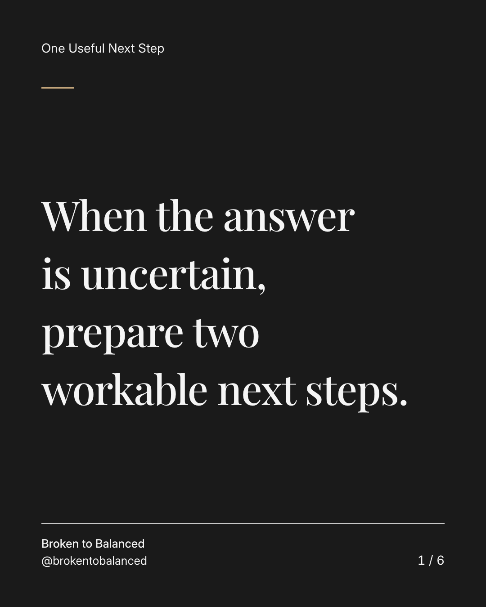
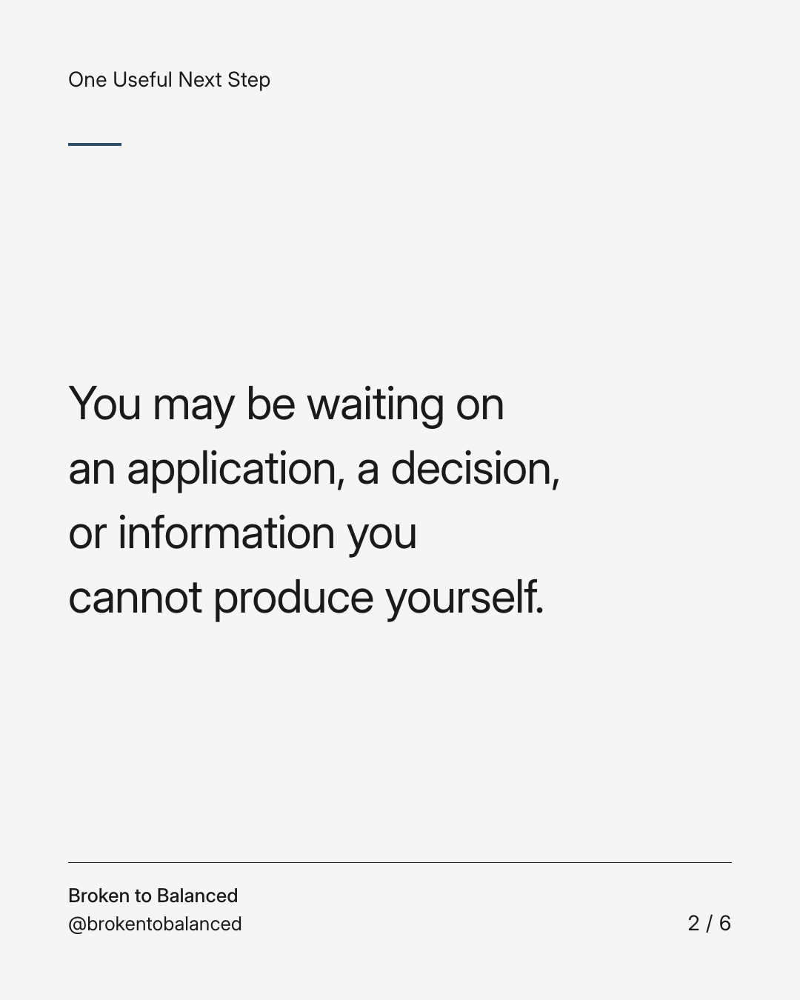
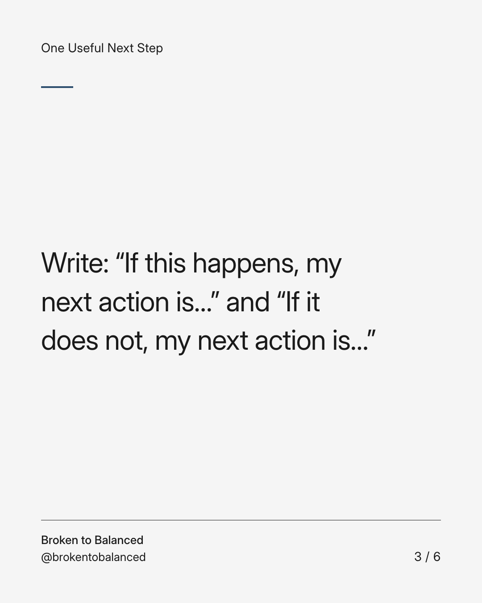
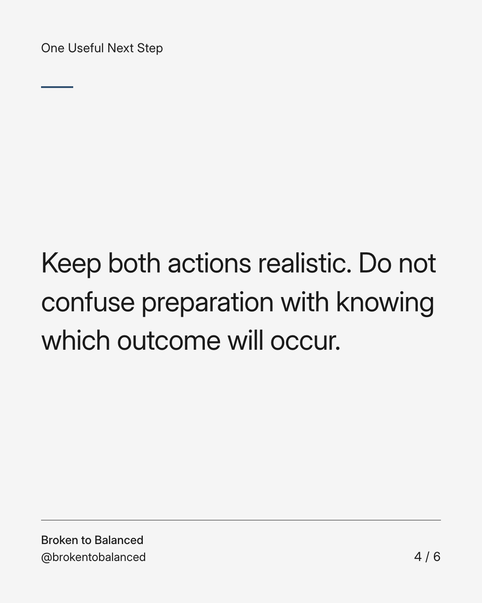
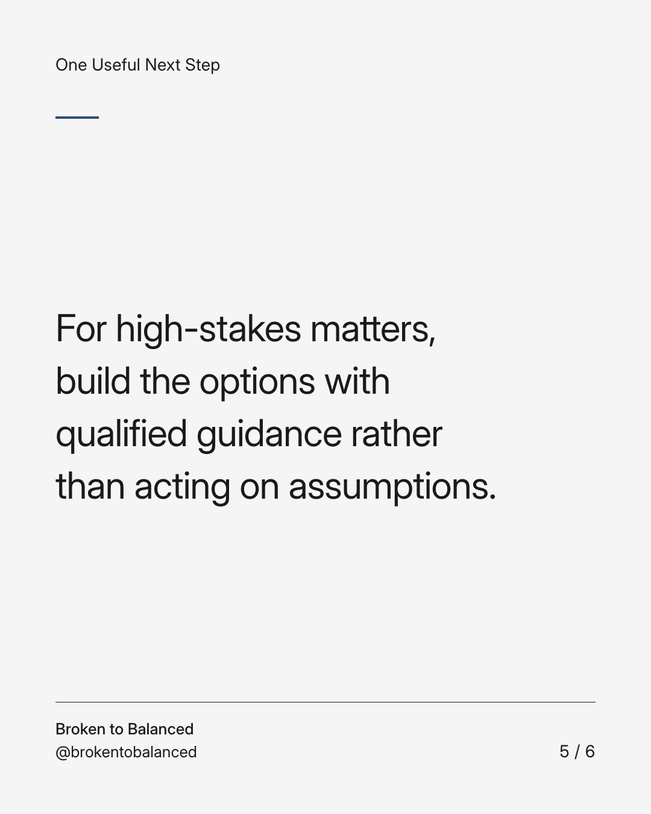
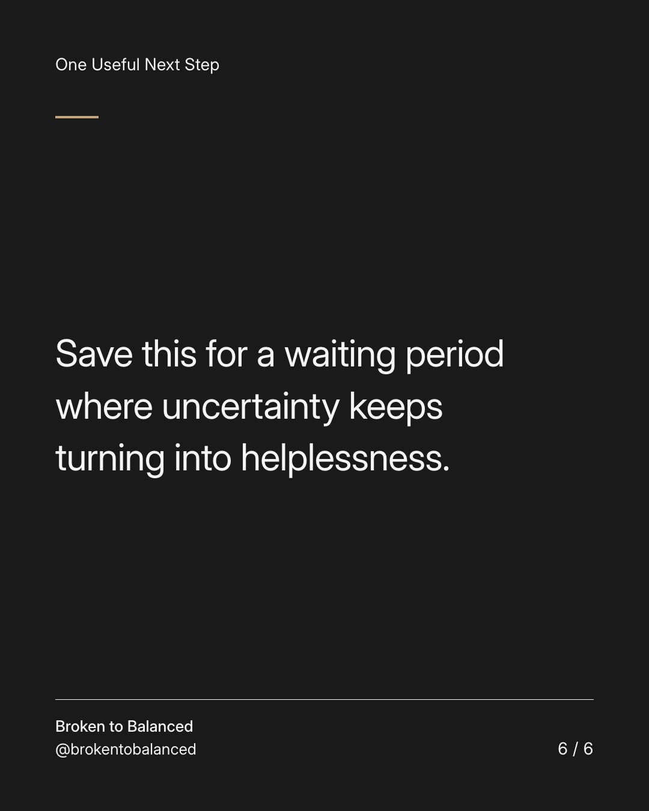

Exact text and accessibility text
When the answer is uncertain, prepare two workable next steps.
Slide 1 of 6. When the answer is uncertain, prepare two workable next steps.


Exact text and accessibility text
You may be waiting on an application, a decision, or information you cannot produce yourself.
Slide 2 of 6. You may be waiting on an application, a decision, or information you cannot produce yourself.


Exact text and accessibility text
Write: “If this happens, my next action is…” and “If it does not, my next action is…”
Slide 3 of 6. Write: “If this happens, my next action is…” and “If it does not, my next action is…”


Exact text and accessibility text
Keep both actions realistic. Do not confuse preparation with knowing which outcome will occur.
Slide 4 of 6. Keep both actions realistic. Do not confuse preparation with knowing which outcome will occur.


Exact text and accessibility text
For high-stakes matters, build the options with qualified guidance rather than acting on assumptions.
Slide 5 of 6. For high-stakes matters, build the options with qualified guidance rather than acting on assumptions.


Exact text and accessibility text
Save this for a waiting period where uncertainty keeps turning into helplessness.
Slide 6 of 6. Save this for a waiting period where uncertainty keeps turning into helplessness.
Exact caption
Plain-text fallback: select and copy the caption.